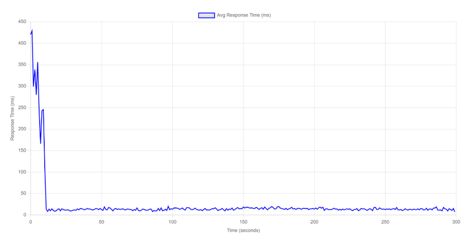
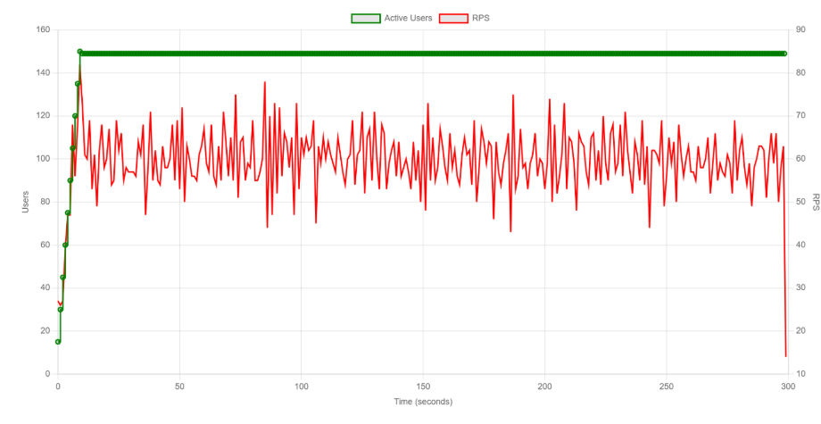
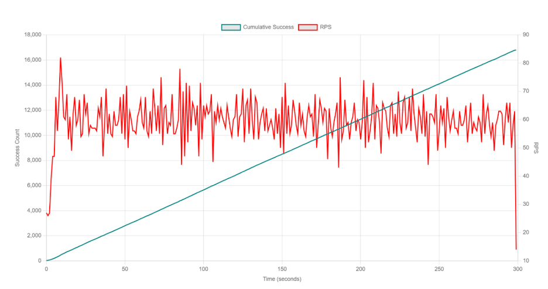
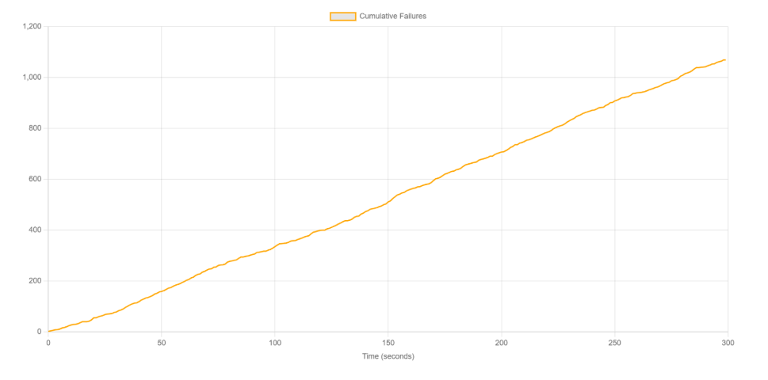

En este reporte presentamos los resultados de la ejecución de la prueba de carga tipo "Baseline" para el sistema PredictHealth. El propósito fundamental de este ejercicio fue establecer una línea base de rendimiento del sistema completo, incluyendo el CMS y los cuatro microservicios core, operando bajo condiciones controladas. Esta fase es crítica para identificar el comportamiento estándar de la arquitectura antes de someterla a escenarios de estrés máximo.
Como equipo, definimos los siguientes objetivos para esta sesión:
Las pruebas se ejecutaron desde una máquina local que actuaba como nodo maestro de Locust, generando tráfico HTTP hacia los servicios desplegados. Los componentes del sistema (CMS y microservicios) estaban corriendo localmente a través de Docker Compose, lo que asegura un entorno aislado y consistente para la evaluación.
La arquitectura general de la prueba sigue el siguiente flujo:
Las URLs base configuradas para cada servicio bajo prueba fueron las siguientes:
http://localhost:80http://localhost:5000http://localhost:5001http://localhost:5002http://localhost:5003A continuación, detallamos la configuración específica utilizada para la prueba Baseline.
baseline_test.pyget_all_doctors, get_doctor_details) y escritura (create_doctor), excluyendo las tareas marcadas como "smoke".get_all_patients, get_patient_details) y escritura (create_patient).get_all_institutions, search_institution) y escritura (create_institution).
Todos los usuarios realizan una operación de login al inicio (on_start) utilizando credenciales únicas extraídas del archivo users.csv para obtener un token JWT válido antes de iniciar sus tareas.
Archivo baseline_test.py
El script baseline_test.py se encarga de definir el comportamiento de los usuarios. Importa clases de usuarios (DoctorUser, PatientUser, InstitutionUser) de un módulo común, permitiendo que cada tipo de usuario ejecute tareas específicas para sus respectivos microservicios.
# baseline_test.py
"""
Prueba de Línea Base (Baseline Test):
- Objetivo: Establecer una métrica de rendimiento base con una carga moderada y constante.
- Carga: 50 usuarios de cada tipo (150 en total).
- Duración: Corta (5 minutos).
- Tareas: Ejecuta todas las tareas (lectura, escritura) EXCEPTO las de 'smoke'.
"""
from common.users import DoctorUser, PatientUser, InstitutionUser
import common.reportingSe utilizó un archivo users.csv para alimentar a los usuarios simulados con credenciales únicas, asegurando que las pruebas de login y las operaciones autenticadas fueran realistas y no dependieran de un único token.
id,password,email
163749fb-8b46-4447-a8b7-95b4a59531b6,Hkfx0Igv_5M(,contacto@despacho-grijalva-mascarenas-y-parra.predicthealth.com
83b74179-f6ef-4219-bc70-c93f4393a350,gj6hdu&2k%(F,contacto@laboratorios-saldivar-santillan-y-villanueva.predicthealth.com
50503414-ca6d-4c1a-a34f-18719e2fd555,PG7KqxVm#em1,contacto@trejo-vigil-e-hijos.predicthealth.com
La prueba se ejecutó con el objetivo de cargar 150 usuarios concurrentes (50 por rol) durante 5 minutos.
Los datos se analizaron directamente desde el archivo baseline.csv generado por Locust.
Para replicar esta prueba, se utilizaron los siguientes comandos según el sistema operativo:
# Windows (PowerShell):
$env:DOCTORS="50"; $env:PATIENTS="50"; $env:INSTITUTIONS="50"; locust -f baseline_test.py --headless -u 150 -r 15 --run-time 5m -E smoke
# Linux / macOS / Git Bash:
DOCTORS=50 PATIENTS=50 INSTITUTIONS=50 locust -f baseline_test.py --headless -r 15 --run-time 5m -E smoke| Métrica | Total |
|---|---|
| Total de Peticiones | 17,861 |
| Tasa de Errores (%) | 5.99% (1,069 errores) |
| Requests por Segundo (RPS) | 59.69 |
| Usuarios Concurrentes | 150 |
| Tiempo de Respuesta (p50) | 8.19 ms |
| Tiempo de Respuesta (p95) | 48.34 ms |
| Tiempo de Respuesta (p99) | 57.86 ms |
| Endpoint | Peticiones | Errores | Tasa de Error (%) | RPS | p50 (ms) | p95 (ms) |
|---|---|---|---|---|---|---|
| /api/v1/doctors | 3800 | 0 | 0.00 % | 12.70 | 7.79 | 14.99 |
| /api/v1/doctors (POST) | 404 | 404 | 100.00 % | 1.35 | NaN | NaN |
| /api/v1/doctors/statistics | 1169 | 0 | 0.00 % | 3.91 | 5.42 | 11.25 |
| /api/v1/institutions | 3686 | 0 | 0.00 % | 12.32 | 7.94 | 15.06 |
| /api/v1/institutions/search | 1481 | 0 | 0.00 % | 4.95 | 46.65 | 51.91 |
| /api/v1/patients | 6507 | 0 | 0.00 % | 21.75 | 7.63 | 13.47 |
| /api/v1/patients (POST) | 657 | 657 | 100.00 % | 2.20 | NaN | NaN |
| /auth/login | 157 | 8 | 5.10 % | 0.52 | 923.26 | 1248.58 |
(Duración total de la prueba: 299.22 segundos)




Los resultados de la prueba baseline revelaron un hallazgo crítico que no está relacionado con el rendimiento del servidor, sino con la lógica de autenticación y los datos de prueba. La métrica más importante de esta prueba es la tasa de error del 5.99%. Como se evidencia en la tabla de fallos extraída del reporte de Locust, todos los errores fueron de tipo 401 UNAUTHORIZED. Esto significa que el servidor no se cayó ni se puso lento; al contrario, funcionó correctamente al rechazar peticiones no autorizadas.
users.csv y la base de datos de usuarios registrados. Es probable que esos usuarios no existieran o tuvieran contraseñas incorrectas.
A pesar de los fallos de autenticación, el 94% de las peticiones fueron exitosas y mostraron un rendimiento excelente. Con un tiempo de respuesta p95 de 48.34 ms, queda demostrado que la infraestructura (servicios, base de datos y caché) es muy rápida y capaz de manejar la carga sin degradación de la latencia.
Sí, en términos de rendimiento. La infraestructura demostró tiempos de respuesta excepcionales (< 50ms) bajo carga. Sin embargo, la integridad de los datos de prueba debe ser corregida antes de la siguiente fase para evitar el ruido generado por los errores de autenticación.
users.csv asegurando que todos los usuarios listados existan realmente en la base de datos de prueba.